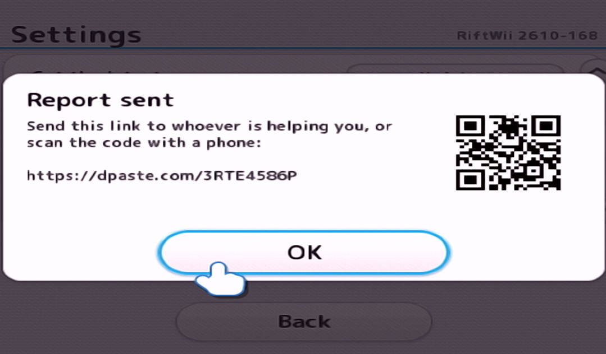

Send a Problem Report
RiftWii can collect the information needed to diagnose a crash, failed launch, black screen, freeze or mod problem and give you a link you can share with the people helping you.
Read the official Reporting a Problem guide
After a crash or failed launch, RiftWii may ask about sending a report the
next time it starts. For other problems, open
Settings > Send a problem report.

Choose Send. RiftWii sends the report to paste.rs, or
dpaste.com if paste.rs is unavailable.
RiftWii shows a link and QR code when the report has been sent. Share that link in the RiftWii Discord or in a GitHub issue, together with what you were doing and what appeared on screen.

The report is also saved as
sd:/riftwii/report.txt.
If RiftWii cannot upload it, send that file instead.